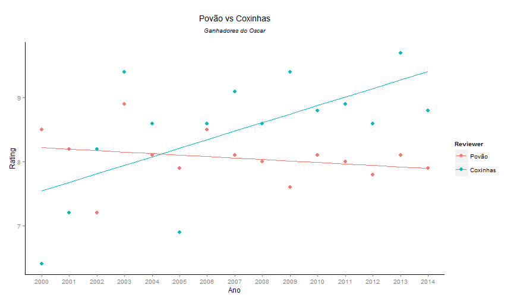
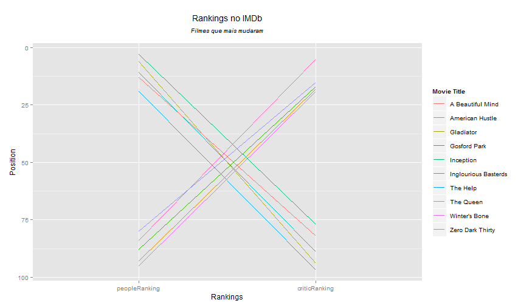
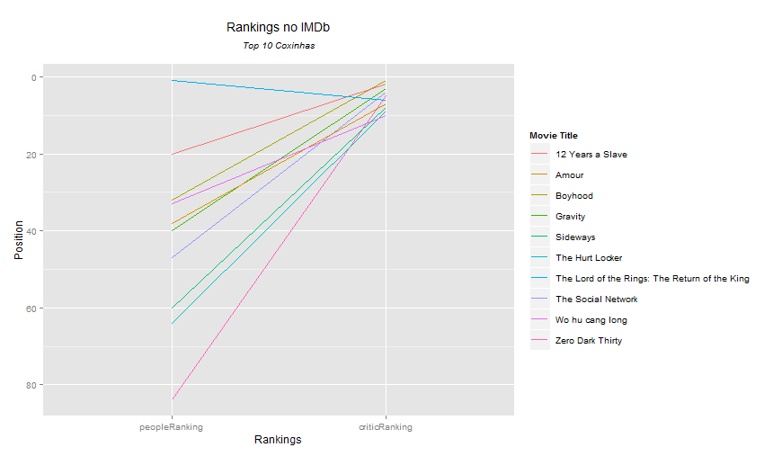
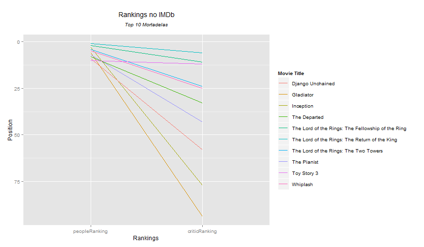
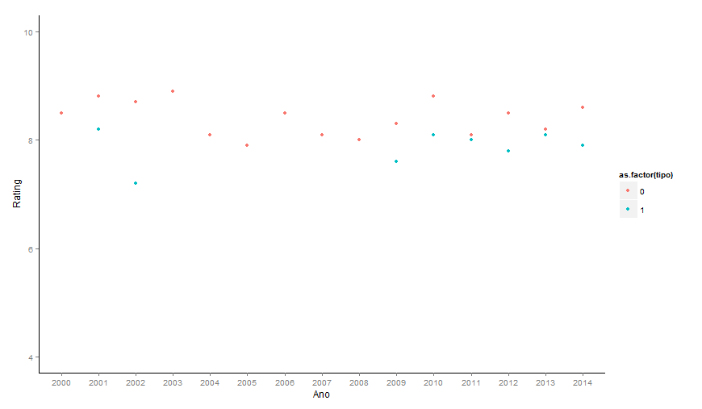
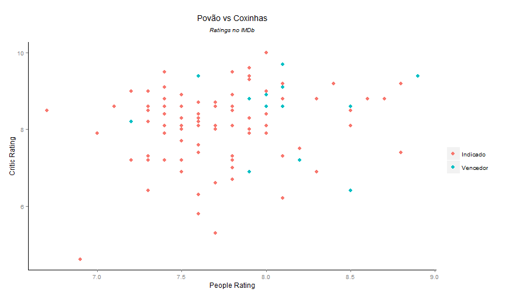

Toggle navigation
Hackfest Analytics
IMDb Awards
Uma análise sobre filmes premiados ao Oscar e avaliações do IMDb
A Análise
A proposta desta análise é fazer um comparativo entre os filmes premiados ao Oscar e os títulos mais bem avaliados no IMDb, a fim de verificar se há discordâncias entre a opinião pública e a academia que elege certos filmes como os melhores títulos do ano.
Os Dados
Os dados utilizados são referentes ao 250 filmes mais bem avaliados em votos por usuários do IMDb e os filmes premiados ao Oscar, onde estes são títulos compreendidos entre os anos de 2000 e 2014.
The Academy Awards
O Oscar, oficialmente denominado de "Prêmios da Academia" (em inglês The Academy Awards ou The Oscars), é um prêmio entregue anualmente pela Academia de Artes e Ciências Cinematográficas, fundada em Los Angeles, Califórnia, em 11 de maio de 1927. São entregues pela Academia, em reconhecimento à excelência de profissionais da indústria cinematográfica.
IMDb
O Internet Movie Database (também conhecido pelo acrônimo IMDb; traduzindo para o português: Base de Dados de Filmes na Internet) é uma base de dados online de informação sobre música, cinema, filmes, programas e comerciais para televisão e jogos de computador
Top 250 - IMDb
O gráfico a seguir representa os 250 filmes mais bem avaliados pelos usuários do IMDb.
Crítica vs Povão
O gráfico a seguir representa a relação entre as notas dadas pelo público e as notas dadas pela crítica.
Ganhadores do Oscar: Crítica vs Povão
O gráfico a seguir representa a relação entre as notas dadas pelo público e as notas dadas pela crítica aos ganhadores do Oscar (melhor filme)

Maiores diferenças
O gráfico a seguir representa os 10 filmes com maior diferença de nota entre crítica e público

Top 10 crítica
Os 10 filmes com maior nota pela crítica

Top 10 povão
Os 10 filmes com maior nota pelo povão

Melhor nota vs Vencedor do Oscar
Análise dos melhores classificados em cada ano em relação aos vencedores do oscar no ano

Povo vs Críticos no Oscar
Análise das notas da crítica e do povão em relação aos Indicados/Vencedores do Oscar
